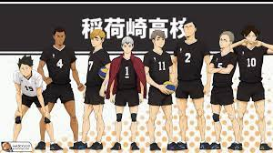

Tim bola voli Inarizaki
Lambang : Rubah
Tim voli putra adalah pembangkit tenaga listrik lama yang telah menghadiri Turnamen Musim Semi selama tiga tahun berturut-turut dan 31 kali secara keseluruhan. Mereka adalah runner-up Interhigh terakhir dan unggulan ke-2 saat ini. Mereka mengalahkan pemain peringkat 3 teratas nasional Wakatsu Kiryu dan timnya Mujinazaka di semifinal, sebelum mengambil satu set dari juara akhirnya Itachiyama. Tahun sebelumnya, Inarizaki selesai di tempat ketiga di turnamen Interhigh dan Spring High. Mereka dikenal dengan daftar pemain terampil mereka, seperti Miya Brothers, dan 2 pencetak gol terbanyak untuk Inarizaki, Rintaro Suna dan Aran Ojiro, yang dikatakan sebagai salah satu dari lima ace teratas di negara ini. Tim ini telah mendapatkan reputasi sebagai "penantang terkuat" untuk gaya permainan mereka yang tidak konvensional dan kecenderungan untuk mengambil risiko. Moto tim adalah "Kami tidak membutuhkan (hal-hal seperti) kenangan" untuk menandakan tidak tertahan oleh pencapaian masa lalu dan selalu mengambil tantangan baru.
Telah disebutkan bahwa tim bola voli sangat populer, dengan si kembar Miya menarik banyak penggemar. Pertandingan Inarizaki biasanya diiringi oleh orkestra besar dan regu sorak mereka, yang telah mengembangkan teknik untuk mengalihkan perhatian lawan mereka dengan ritme dan suara.
Pemain :
( 1 ) Shinsuke Kita
( 2 ) Ren Ōmimi
( 4 ) Aran Ojiro
( 5 ) Hitoshi Ginjima
( 7 ) Atsumu Miya
( 10 ) Rintarō Suna
( 11 ) Osamu Miya
( 13 ) Yūto Kosaku
( 14 ) Heisuke Riseki
( 15 ) Michinari Akagi